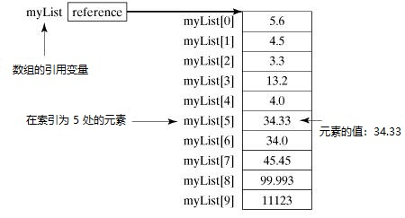

Java 数组(array)
Java提供了一种叫作数组的数据结构，它是一种用来存储相同类型元素的固定大小顺序集合。 数组用于存储数据集合，但也可以将数组视为相同类型的变量集合。
声明一个数组变量(如：numbers)并使用numbers[0]，numbers[1]和...，numbers[99]来表示单个变量，例如number0，number1，...和number99，而不是单独地声明各个变量。
本教程介绍如何声明数组变量，创建数组和索引访问数组。
声明数组变量
要在程序中使用数组，需要先声明一个变量以引用该数组，并且要指定该变量的数组类型。 以下是声明数组变量的语法 -
语法
dataType[] arrayRefVar; // 推荐方式。
// 或者
dataType arrayRefVar[]; // 有效，但不是推荐方式。
注 - 格式：
dataType [] arrayRefVar是推荐方式。 格式：dataType arrayRefVar []来自C/C++语言，可在Java中采用以适应C/C++程序员。
示例
以下代码片段是此语法的示例 -
double[] myList; // 推荐方式。
// 或者
double myList[]; // 有效，但不是推荐方式。
创建数组
可以使用new运算符来创建数组，如以下语法 -
// 声明
dataType[] arrayRefVar; // 推荐方式。
// 创建
arrayRefVar = new dataType[arraySize];
上面语句做了两件事 -
- 它使用
new dataType[arraySize]来创建了一个数组。 - 它将新创建的数组的引用分配给变量
arrayRefVar。
声明一个数组变量，创建一个数组，并将该数组的引用分配给变量，可以在一个语句中完成，如下所示 -
dataType[] arrayRefVar = new dataType[arraySize];
或者，可以按如下方式创建数组 -
dataType[] arrayRefVar = {value0, value1, ..., valuek};
通过索引访问数组元素。 数组索引值从0开始; 也就是说，它们从0开始到arrayRefVar.length - 1。
示例
下面语句中声明了一个数组变量myList，它创建了一个包含10个double类型元素的数组，并将数组变量的引用分配给myList -
double[] myList = new double[10];
下图表示数组myList。 这里，myList数组中包含十个double值，索引从0到9。

处理数组
处理数组元素时，经常使用for循环或foreach循环，因为数组中的所有元素都是相同的类型，并且数组的大小是已知的。
示例：这是一个完整的示例，演示了如何创建，初始化和处理数组
文件名:ArrayTest.java
import java.util.*;
public class ArrayTest {
public static void main(String[] args) {
double[] myList = { 10.01, 12.19, 23.44, 43.95, 77.88, 65.00 };
// 打印所有元素
for (int i = 0; i < myList.length; i++) {
System.out.print(myList[i] + ", ");
}
System.out.println(" ");
// 求和
double total = 0;
for (int i = 0; i < myList.length; i++) {
total += myList[i];
}
System.out.println("总和：" + total);
// 查找最大值
double max = myList[0];
for (int i = 1; i < myList.length; i++) {
if (myList[i] > max)
max = myList[i];
}
System.out.println("元素最大值：" + max);
}
}
快在右侧实验区使用下方命令执行上面代码，康康会得到什么结果？
cd ~/java && javac ArrayTest.java
java ArrayTest
foreach循环
JDK 1.5引入了foreach循环或增强for循环，它能够在不使用索引变量的情况下顺序遍历整个数组。
示例：
以下代码演示如何遍历数组myList中的所有元素 -
文件名:ArrayForEach.java
import java.util.*;
public class ArrayForEach {
public static void main(String[] args) {
double[] myList = { 10.01, 12.19, 23.44, 43.95, 77.88, 65.00 };
// Print all the array elements
for (double element : myList) {
System.out.print(element+", ");
}
}
}
快在右侧实验区使用下方命令执行上面代码，康康会得到什么结果？
cd ~/java && javac ArrayForEach.java
java ArrayForEach
将数组传递给方法
就像将原始类型值传递给方法一样，也可以将数组传递给方法。 例如，以下printArray()方法用来打印int数组中的元素 -
示例：将数组传递给方法
文件名:PrintArray.java
import java.util.*;
public class PrintArray {
public static void main(String[] args) {
double[] myList = { 10.01, 12.19, 23.44, 43.95, 77.88, 65.00 };
// Print all the array elements
printArray(myList);
}
public static void printArray(double[] array) {
for (int i = 0; i < array.length; i++) {
System.out.print(array[i] + " ");
}
}
}
快在右侧实验区使用下方命令执行上面代码，康康会得到什么结果？
cd ~/java && javac ArrayPrint.java
java ArrayPrint
从方法返回数组
方法可以返回数组。
示例：返回一个与给定参数数组相反的数组
文件名:ReturnArray.java
import java.util.*;
public class Test {
public static void main(String[] args) {
double[] myList = { 10.01, 12.19, 23.44, 43.95, 77.88, 65.00 };
// Print all the array elements
printArray(myList);
printArray(reverse(myList));
}
public static void printArray(double[] array) {
for (int i = 0; i < array.length; i++) {
System.out.print(array[i] + " ");
}
System.out.println(" ");
}
public static double[] reverse(double[] list) {
double[] result = new double[list.length];
for (int i = 0, j = result.length - 1; i < list.length; i++, j--) {
result[j] = list[i];
}
return result;
}
}
快在右侧实验区使用下方命令执行上面代码，康康会得到什么结果？
cd ~/java && javac ReturnArray.java
java ReturnArray